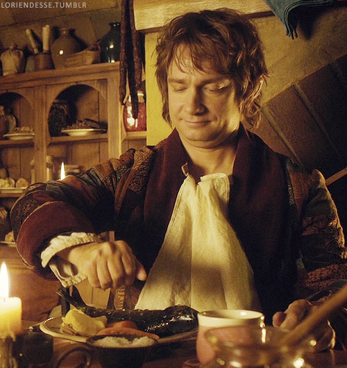
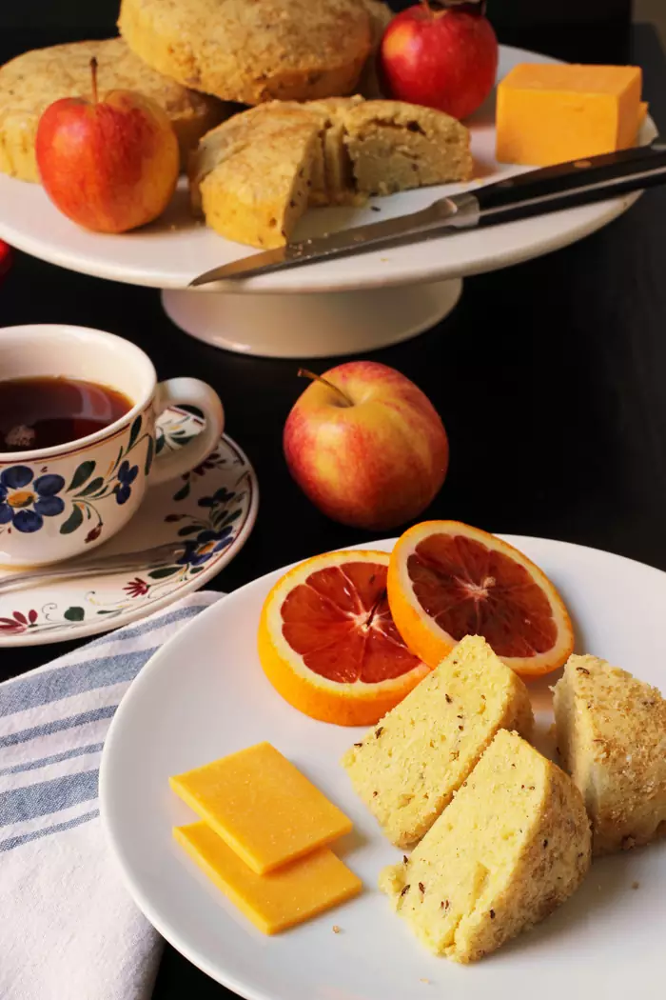

Bilbo Baggins' Tea Cake Recipe

Time for a hobbit tea! Seed Cakes are a tasty pound cake filled with caraway seeds. Their distinct flavor makes them
delicious as well as memorable.
Seed cakes figure prominently in the Unexpected Party that Bilbo hosts for the band of dwarves that come knocking at his
door.
In the story, Bilbo isn’t really expecting company. In fact, “he found himself scuttling off, too, to the cellar to fill
a pint beer-mug, and then to a pantry to fetch two beautiful round seed-cakes which he had baked that afternoon for his
after-supper morsel.”
So, clearly seed cakes go with beer.
Ingredients:
- 1 cup butter softened (2 sticks)
- 1 cup granulated sugar
- 3 egg
- 2 cup unbleached, all-purpose flour
- 1 TBSP caraway seeds
- 1/4 TSP ground nutmeg
- 1/4 TSP ground cinnamon
- 1/4 cup brandy
- 4 TSP demerara sugar

Steps:
-
Soften the butter and allow the eggs to come to room temperature.
-
In a large mixing bowl, beat the butter until light and fluffy. Add the sugar and cream it together with the butter.
-
Add the eggs one at a time, scraping down the sides of the bowl between blending.
-
In a second bowl, combine the flour, spices, and caraway seeds.
-
Add half of the flour mixture to the butter and sugar mixture and stir to combine.
-
Add the brandy and stir.
-
Stir in the last of the flour mixture and gently combine.
-
Grease four 4.5-inch mini springform pans.
-
Divide the batter evenly among the pans. Sprinkle demerara sugar over the tops.
-
Bake at 400 degrees for about 30 to 35 minutes, or until a tester comes out clean. Cool the cakes on wire racks before
removing them from the pans.
-
Cakes may be frozen. Cool them completely, wrap in plastic wrap, and place in a ziptop bag. Store in the freezer until a
few hours before serving. Thaw, wrapped, at room temperature.